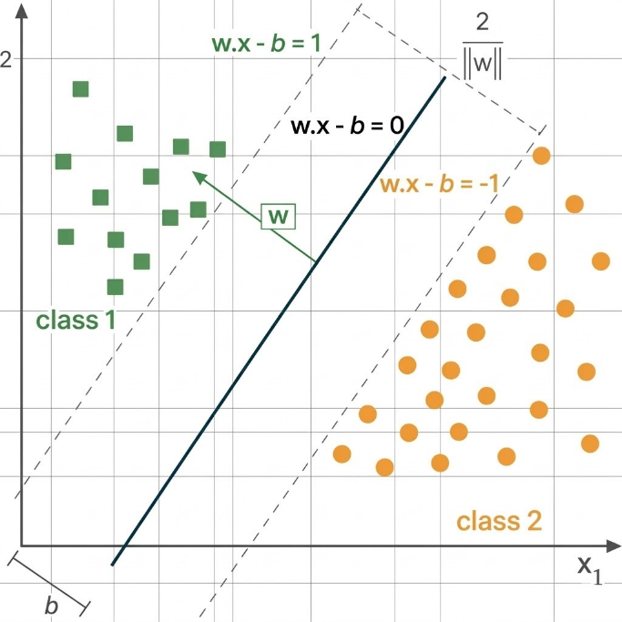
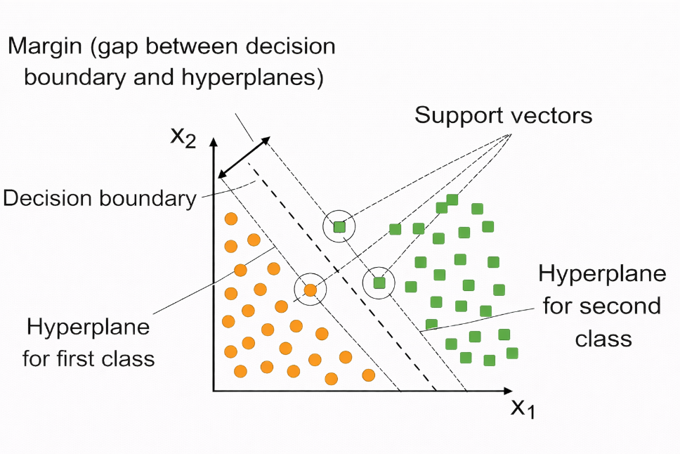
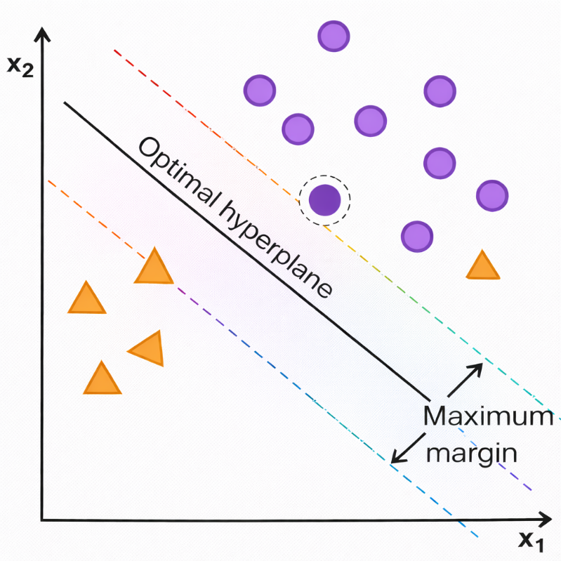
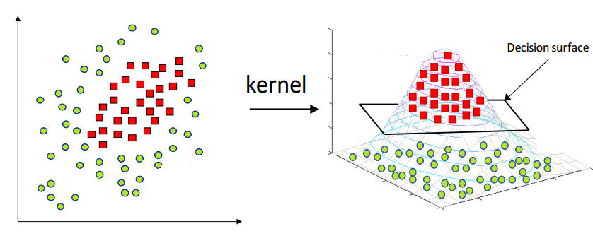
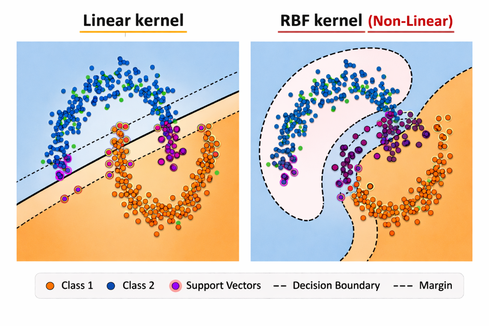

Support Vector Machine (SVM)
1. Introduction
Support Vector Machines (SVMs) are supervised machine learning algorithms used for classification and regression tasks. They were formally introduced by Cortes and Vapnik in 1995 as part of the statistical learning theory based on the principle of Structural Risk Minimization (SRM).
The main objective of SVM is to find an optimal decision boundary that separates different classes in a dataset with the maximum possible margin. Instead of simply minimizing classification error, SVM attempts to maximize the distance between the separating boundary and the closest data points of each class, which improves the model’s generalization ability.
In a feature space, SVM identifies a boundary known as a hyperplane that divides the data points into different categories. Among many possible hyperplanes, the algorithm selects the one that maximizes the margin between classes, making the classifier robust and less sensitive to noise.
2. Hyperplane
The hyperplane divides the feature space into two regions corresponding to different classes. For a two-dimensional dataset, the hyperplane is a straight line, whereas in three dimensions it becomes a plane. In higher-dimensional spaces, it is referred to as a hyperplane.
SVM does not choose just any separating hyperplane; instead, it selects the optimal hyperplane that maximizes the distance from the nearest training points of both classes. This property makes SVM robust and improves its ability to generalize to unseen data.
the SVM seeks a separating hyperplane defined by:
where 𝑤 is the weight vector which is normal to the hyperplane and 𝑏 is the bias term. Note - An optimal hyperplane is the one that maximizes the margin between the classes.

Figure 1: Linear Support Vector Machine (SVM): Maximum Margin Classifier.
3. Support Vectors
Support vectors are the data points that lie closest to the separating hyperplane. These points play a critical role in defining the position and orientation of the decision boundary. The distance between the hyperplane and these closest data points is known as the margin. Only these boundary points influence the formation of the hyperplane, while other points that lie farther away do not significantly affect the model. Because the hyperplane depends directly on these points, the algorithm is called a Support Vector Machine.

Figure 2: SVM Classification with Maximum Margin and Support Vectors.
As shown in Figure 2, the Support Vector Machine (SVM) separates two classes of data points in a two-dimensional feature space represented by x1 and x2. The orange circular points represent the first class, while the green square points represent the second class. The central dashed line represents the decision boundary that divides the two classes, and the two parallel dashed lines on either side denote the hyperplanes that define the margin.
The region between these hyperplanes represents the margin, which is the distance between the decision boundary and the nearest data points. The data points that lie closest to these margin boundaries are known as support vectors, and they play a crucial role in determining the optimal separating hyperplane. SVM aims to maximize this margin to achieve improved classification performance and better generalization.
4. Margin Maximization
This optimization problem attempts to minimize the magnitude of the weight vector while satisfying the classification constraints. By minimizing || 𝑤 ||2, the margin between the two classes becomes larger. A larger margin leads to a classifier that is less sensitive to noise and better able to generalize to unseen data.
The margin maximization problem can be formulated as:
with constraint,
for all training samples (xi, yi). This formulation ensures that the separating hyperplane lies as far as possible from the closest data points, thereby enhancing the classifier’s ability to generalize to unseen data.

Figure 3: Optimal Hyperplane and Maximum Margin in Support Vector Machines.
As shown Figure 3, the Support Vector Machine (SVM) separates two classes of data points in a two-dimensional feature space defined by the axes x1 and x2. The purple circular points represent one class, while the orange triangular points represent the other. The solid slanted line labelled “Optimal hyperplane” acts as the decision boundary that divides the two classes.
The two parallel dashed lines on either side of this hyperplane denote the margin boundaries. The distance between these boundaries is referred to as the maximum margin, which SVM aims to maximize for improved generalization. The data points that lie closest to these margin lines are known as support vect
5. Kernel Trick
In many real-world problems, the data is not linearly separable in the original feature space. SVM solves this problem using the kernel trick, which implicitly maps the data into a higher-dimensional feature space where linear separation becomes possible. Instead of explicitly computing the transformation into the higher-dimensional space, kernel functions compute the inner product of transformed feature vectors directly. This makes the computation efficient even when the dimensionality of the transformed space is very large.
The kernel trick allows SVM to construct non-linear decision boundaries in the original input space while still maintaining the mathematical formulation of a linear classifier in the transformed feature space.

Figure 4: Kernel Trick: Mapping Data to Higher-Dimensional Space in SVM.
As shown in the above Figure 4, the diagram explains how Kernel Support Vector Machines (Kernel SVM) work. On the left side, the data points belong to two different classes: green circles and red squares. In this two-dimensional space, the data is not linearly separable, meaning a straight line cannot properly divide the two classes.
To solve this problem, a kernel function is applied, which transforms the data into a higher- dimensional space. This transformation is illustrated on the right side of the figure, where the data is mapped into a three-dimensional space. In this higher dimension, the data becomes linearly separable, and a decision surface (hyperplane) can be used to separate the two classes effectively.
Thus, the kernel trick allows SVM to handle complex, non-linear classification problems by mapping the data into a higher-dimensional feature space where a linear separator can be found.
Common Kernel Functions include
Linear Kernel: The linear kernel is suitable when the data is approximately linearly separable:
RBF Kernel: The RBF kernel maps data into an infinite-dimensional feature space and is highly effective for capturing complex, non-linear relationships:
The variance σ2 controls how far the influence of individual training samples. Higher values lead to tighter decision boundaries.
The RBF kernel is particularly effective and is commonly used for modelling complex, non- linear relationships due to its radially localised response characteristics.

Figure 5: Comparison of Linear and RBF Kernels in SVM.
6. L1 Regularization in SVM
Regularization plays an important role in controlling model complexity and preventing overfitting. In Support Vector Machines, regularization is controlled through the parameter C, which balances margin maximization and classification error.
L1 regularization introduces sparsity in the model by encouraging some weight coefficients to become zero. This helps in feature selection and improves model interpretability. By penalizing the absolute magnitude of the weights, L1 regularization reduces the influence of less important features and helps create simpler models.
7. Algorithm
Step 1: Given training data with labels +1 and -1.
Step 2: Find hyperplane:
b = bias term
Step 3: Define margin constraints:
Step 4:
Step 5: Solve optimization:
Step 6: Solve using Lagrange multipliers:
Convert to dual form
Find αi values for each training point
Support vectors are points where αi > 0.
Step 7: For non-linear data, apply Kernel Trick:
-
Linear Kernel:K(x, x') = x · x'
-
RBF Kernel:K(x, x') = e - ||x - x'||2 2σ2
-
Polynomial Kernel:K(x, x') = (x · x' + c)d
Maps data to higher dimension where linear separation is possible
Step 8: For Prediction:
If f(x) ≥ 0, predict class +1; otherwise class -1.
8. Merits of Support Vector Machines
- Good generalization performance SVMs focus on maximizing the margin between classes, which helps the model perform well on unseen data and reduces overfitting, especially in high-dimensional datasets.
- Works well for both linear and non-linear data By using different kernel functions such as Linear and RBF, SVMs can handle simple linearly separable data as well as complex non-linear patterns effectively.
- Uses only important data points The model depends mainly on support vectors, which are the most critical data points near the decision boundary. This makes the classifier efficient and robust.
9. Demerits of Support Vector Machines
- High training time for large datasets SVM training can be slow and computationally expensive when the dataset is very large, particularly when non-linear kernels are used.
- Sensitive to parameter selection The performance of SVM strongly depends on choosing the right kernel and hyper- parameters. Incorrect values can lead to poor classification results.
- Harder to interpret results Unlike simpler models such as Linear Regression or Decision Trees, especially SVMs with non-linear kernels do not provide clear insights into how individual features might affect predictions.